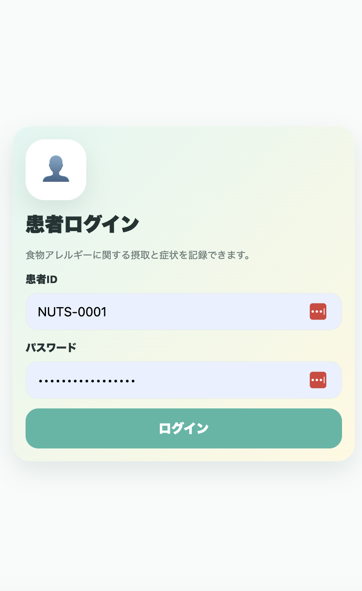
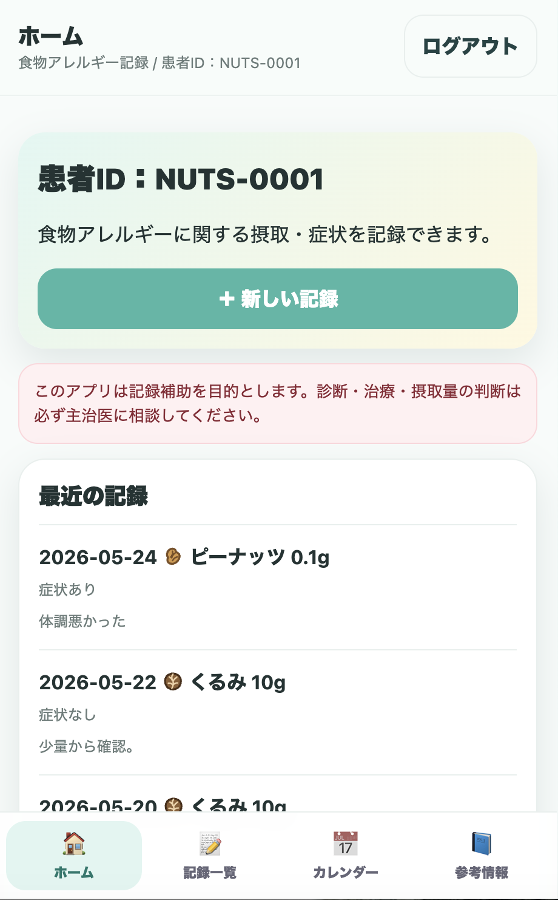
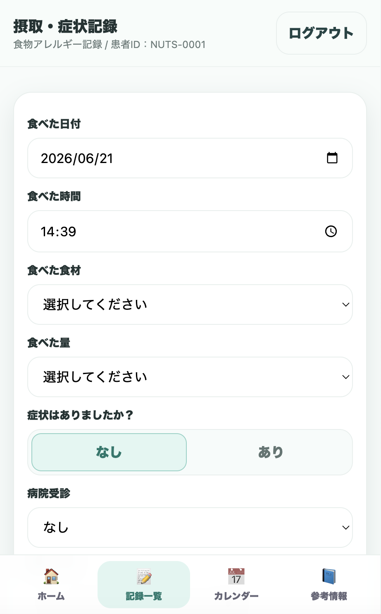
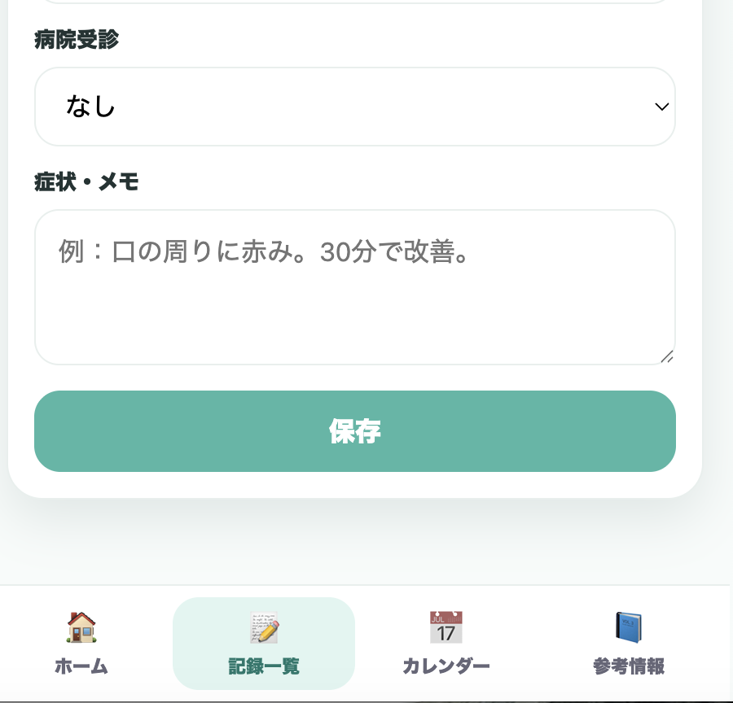
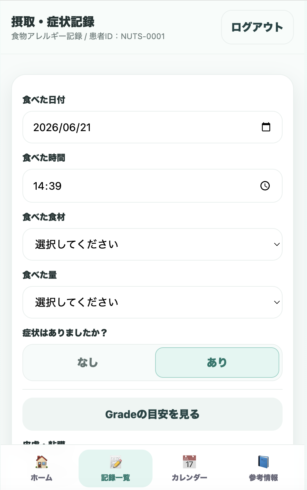
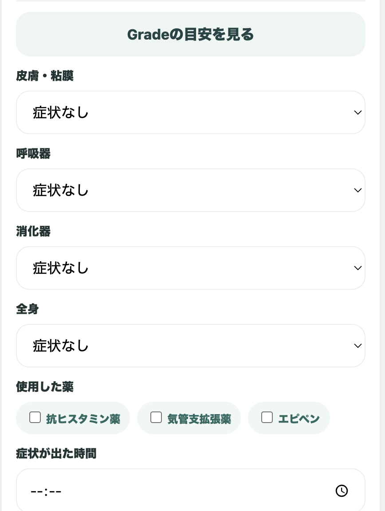
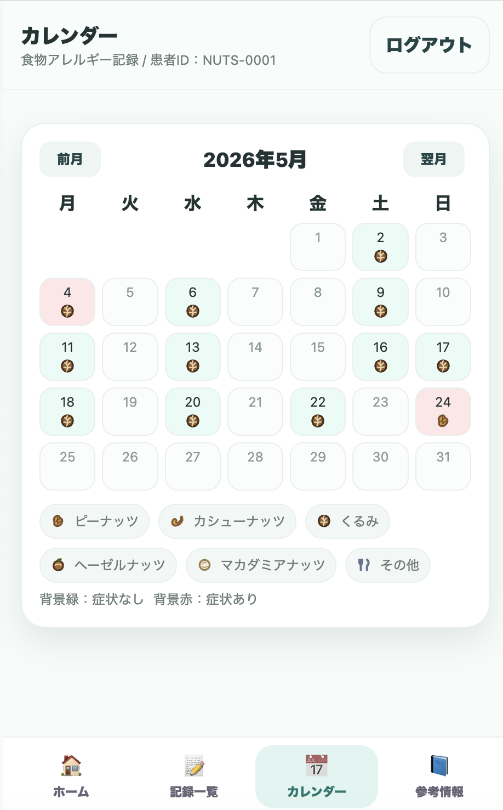
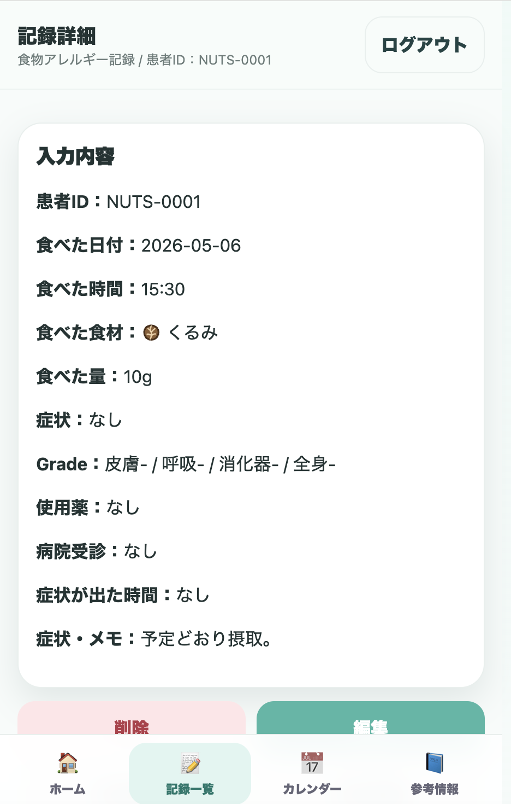
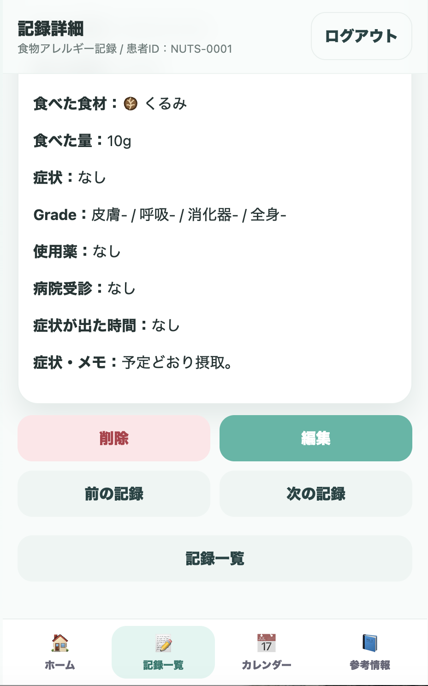
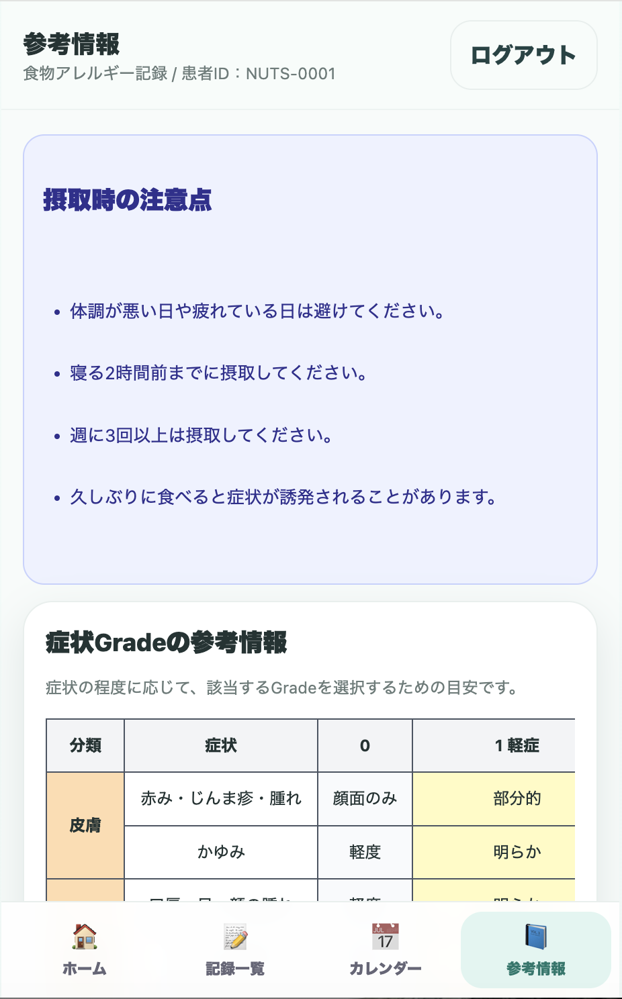

患者用 利用手順書
患者・保護者が、食べた食品、摂取量、症状、薬剤使用、受診状況を記録する手順です。
1. 患者ログイン
1患者IDとパスワードを入力する
患者ログイン画面で、医療機関から案内された患者IDとパスワードを入力し、「ログイン」を押します。

患者ID（例：NUTS-0001）とパスワードでログインします。
2. ホーム画面
2最近の記録を確認する
ホーム画面では患者ID、注意文、最近の記録が表示されます。新しく入力する場合は「＋新しい記録」を押します。

下部メニューから「ホーム」「記録一覧」「カレンダー」「参考情報」へ移動できます。
このアプリは記録補助を目的とします。診断・治療・摂取量の判断は必ず主治医に相談してください。
3. 新しい記録を入力する
3基本情報を入力する
「食べた日付」「食べた時間」「食べた食材」「食べた量」を入力します。

食材と量はプルダウンから選択します。
| 入力項目 | 説明 |
|---|---|
| 食べた日付 | 摂取した日を入力します。 |
| 食べた時間 | 摂取した時刻を入力します。 |
| 食べた食材 | 対象食材を選択します。 |
| 食べた量 | 摂取量を選択します。 |
4. 症状の有無を入力する
4症状がなければ「なし」を選択する
症状がなかった場合は「なし」を選択し、病院受診、症状・メモを入力して保存します。

メモ欄には体調や摂取時の様子を自由に入力できます。
5症状があれば「あり」を選択する
「あり」を選択すると、Grade入力欄が表示されます。「Gradeの目安を見る」を参考に入力してください。

症状ありを選ぶと詳細入力欄が追加されます。

皮膚・呼吸器・消化器・全身症状、使用薬、症状が出た時間を入力します。
| 項目 | 入力内容 |
|---|---|
| 皮膚・粘膜 | 赤み、じんま疹、腫れ、かゆみ等の程度 |
| 呼吸器 | 咳、ぜいぜい、息苦しさ等の程度 |
| 消化器 | 腹痛、嘔吐、下痢等の程度 |
| 全身 | ぐったり、意識状態、強い全身症状等 |
| 使用した薬 | 抗ヒスタミン薬、気管支拡張薬、エピペン |
| 病院受診 | 受診の有無を選択 |
5. カレンダーで確認する
6月ごとの記録を確認する
カレンダーでは、記録がある日が食材アイコンで表示されます。背景緑は症状なし、背景赤は症状ありを示します。

前月・翌月ボタンで月を切り替えられます。
6. 記録詳細を確認・編集する
7記録詳細を確認する
記録一覧やカレンダーから記録を選択すると、入力内容を確認できます。

日付、時間、食材、量、症状、使用薬、受診、メモを確認できます。
8編集・削除・前後の記録へ移動する
必要に応じて「編集」「削除」を行います。「前の記録」「次の記録」で連続して確認できます。

誤入力時は編集または削除を利用します。
7. 参考情報を見る
9摂取時の注意点・Grade目安を確認する
参考情報では、摂取時の注意点と症状Gradeの目安を確認できます。

入力時に迷った場合は、Gradeの参考情報を確認します。
体調が悪い日や疲れている日は摂取を避け、摂取内容や症状について不安がある場合は主治医へ相談してください。